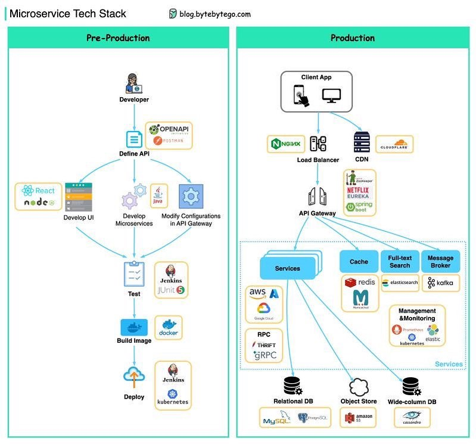
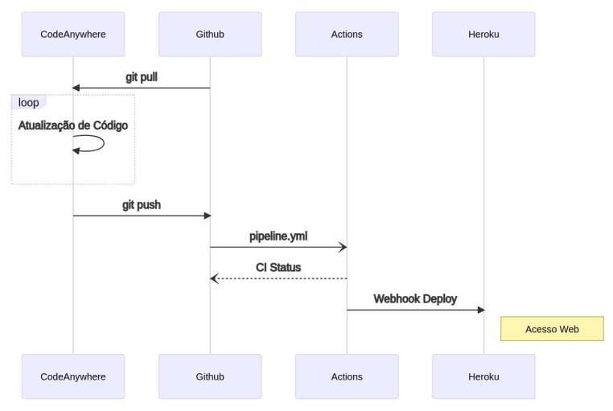
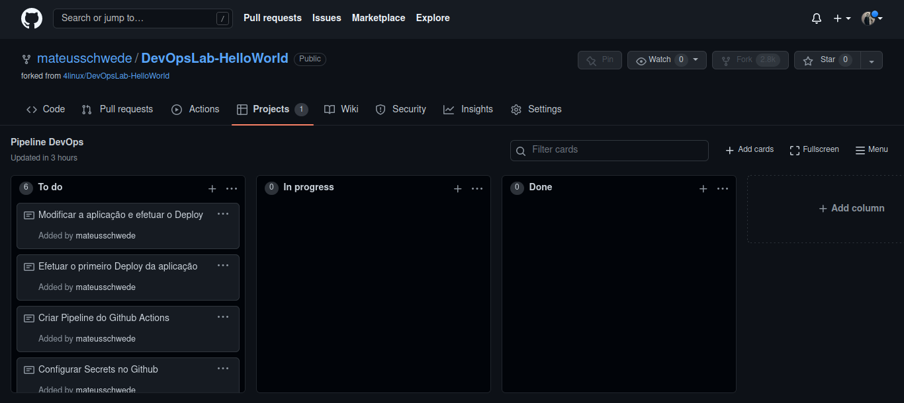
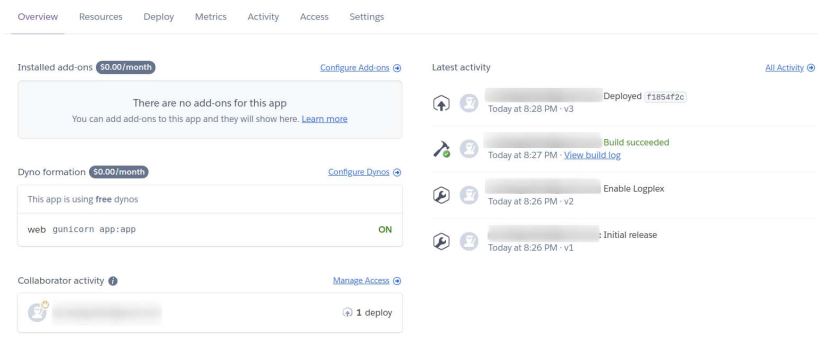

O que é
Development e Operations, é o conceito/processo de desenvolvimento de software que reúne metodologia, prática, ambientes, pessoas e ferramentas que integram tais áreas, de forma mais unificada, relacionada e padronizada, enfatizando melhor comunicação entre os profissionais de tais áreas, favorecendo produtividade e valor ao cliente. Profissionais DevOps são aptos para exercer funções tanto em desenvolvimento de software, quanto na administração dos mesmos. Surgimento a partir do Manifesto Ágil, em 2001, com a adesão de tecnologias e motodologias a fim de facilitar o desenvolvimento de sistemas e, com isso, aumentar a produtividade. DevOps é um processo Agile, adotando os conceitos de metodologias ágeis, além de metodologias como Scrum e Spotify Squads, onde há processo cíclico e entregas fracionadas do produto final, havendo, consequentemente, melhoria contínua. Neste ponto, tem-se os principais conceitos:
- Indivíduos e interações, mais que processos e ferramentas;
- Software em funcionamento, mais que documentação abrangente;
- Responder a mudanças, mais que seguir um plano.
Entre 2001 e 2002, procuraram-se novos mecanismos para agilizar os processos na entrega do software, envolvendo a Agile Conference. O termo DevOps surgiu em 2009, originado a partir da Agile Conference de 2008, dando origem, futuramente, aos DevOpsDays - Criada e implantada na Bélgica. Entre os materiais que impulsionaram o conceito, tem-se o livro Phoenix Project e o site Reliability Engineering.
Áreas
Development: A infraestrutura necessária para reunir o desenvolvimento, desde o compartilhamento de ativos até a escrita de código e algoritmos para aplicativos corporativos que podem aproveitar recursos avançados, como IA, containers e funções sem servidor. Além disso, testes, arquivamento, rastreamento de bugs e outras tarefas críticas são realizadas na fase de desenvolvimento, tudo na estrada para o lançamento. Ferramentas como Git e GitHub são usadas nessas etapas.
Operations: Com a aplicação implementada, o lado das operações assume o controle com foco em garantir que os desafios de negócios das plataformas em Cloud sejam atendidos. Problemas como segurança do usuário, gerenciamento de BD, escalabilidade para cargas de trabalho de produção e aplicação de patches são todos tratados nesta função. Ferramentas geralmente utilizadas: Terraform, Ansible, Puppet e Chef para gestão de infraestrutura e configurações.
Objetivos de ambiente DevOps
- Melhorar frequência de deploys;
- Automatizar processos;
- Diminuir ocorrência de erros em novas versões;
- Curtos períodos de tempo para mudanças e melhorias;
- Recuperação rápida à falhas no ambiente;
- Padronização dos processos de configuração e servidores.
Pilares do DevOps (C.A.L.M.S)
- Culture: Respeitar a cultura, compartilhando e colaborando com as relações saudáveis entre todas as áreas, trabalhando junto e atingindo resultados;
- Automation: Automatizar quando possível, eliminando o máximo de trabalho laboral possível;
- Lean: Processo ágil, sem desperdícios, mantendo foco no cliente e valor que o mesmo espera do produto;
- Measure: Medir tudo o que for possível, de processos a pessoas, para seguir sempre com o processo de melhoria contínua, coração do DevOps;
- Sharing: Ambientes DevOps têm como características fundamentais a cultura Blameless (Sem culpa), favorecendo compartilhamento e segurança aos envolvidos.
Skills envolvidas
- Cultura e compartilhamento (Metodologias agiles, como Scrum e Spotify Squads. Utilização de OKR (Objectives, Key Results) para evolução nos conceitos da área);
- Programação e instalação de softwares;
- Gerenciamento de servidores, virtualização (Softwares como Vagrant), containers (Microservices. Softwares como Docker, Kubernetes), redes e segurança;
- Criação de scripts;
- Instalação e configuração de middlewares (Programas que fornecem serviços para aplicações de outros programas. Exemplo Apache, nginx);
- Versionamento e sistemas VCS (Softwares como Git, Github, Gitlab);
- Automatização de tarefas e gerenciamento de configurações (Cloud como AWS, Azure, GCP. On Premises, infraestrutura local. CI/CD. Softwares como Ansible, Chef, Puppet);
- Infraestrutura como código;
- Observabilidade (Monitoramento da infraestrutura e do software. Softwares como Prometheus e Zabbix);
Pipeline DevOps

Pipeline tem como objetivo automatizar o processo de entrega de infraestrutura ou software de forma rápida, garantindo qualidade, testes, estabilidade e escalabilidade. Desenvolvimento agile de software está diretamente ligado a uma pipeline de software. Uma pipeline de entrega de software normalmente constitui-se das etapas:
- Planejamento;
- Análise;
- Desenho;
- Implementação;
- Testes e Integração;
- Deploy e Revisão.
É um processo em ciclos, onde define-se o entregável que é trabalhado até sua conclusão. Após isso, inicia-se novo ciclo, definindo novamente o entregável e trabalhando até sua conclusão. Pipeline DevOps tem como base uma pipeline agile, diferenciando-se em alguns pontos. Trabalha-se com entregáveis, porém o processo é contínuo (Melhoria contínua). De forma geral, uma Pipeline CI/CD possui os elementos: Compilação, teste, lançamento, implantação, validação e conformidade. Tem-se 2 ciclos, Dev e Ops, compostos das etapas:
-
Dev:
- Planejar: Listagem de requerimentos/requisitos e criação de cards onde serão definidas as atividades da Sprint. Ferramentas utilizadas: Boards Kanban - Jira, Trello, Wekan, Notion;
- Desenvolver ou codificar: Organização do código e da colaboração entre as equipes. Ferramentas utilizadas: Git, Github, Gitlab;
- Construir/Build: Geração do artefato entregável, seja esse uma library ou pacote executável. Ferramentas utilizadas: Gradle, Docker, Maven, Packer;
- Testar: Efetuar diversos testes, garantindo que o entregável funcione como planejado. O QA Engineer (Software quality assurance) é o profissional que os realiza. Ferramentas utilizadas: Selenium, JUnit, pytest, inspec.
- Lançar/Deploy: Lançamento da aplicação para ambiente de produção. Ferramentas utilizadas: Terraform, Ansible, Chef, Puppet, Powershell;
- Implantar e operar: Garantir que o artefato testado esteja em execução. Ferramentas utilizadas: Docker, rkt, Kubernetes, Nomad, OpenShift, clouds como AWS, Azure, GCP;
- Monitorar: Garantir que o sistema encontra-se saudável, ou seja, de acordo com o planejado para seu funcionamento, dentro dos requisitos com eficiência. Monitora-se IPs, DNS, arquivos de logs, status de APIs. Ferramentas utilizadas: Prometheus, Zabbix, Grafana, Elasticstack, Datadog, Splunk, Nagios.
Ops:

Práticas DevOps
- CI/CD: Automatização das etapas dos ambientes do ciclo de construção da aplicação, reduzindo desvios de configuração;
- Controle de versão: Gerenciamento de código por meio de versões;
- Desenvolvimento agile: Metodologia de desenvolvimento que abrange colaboração dos stakeholders, realizada por meio de curtos ciclos, compondo-se em abstração de features e entrega do essencial nesses períodos;
- Infraestrutura como código: Gerar infraestrutura configurada e pronta por meio de códigos que o farão, diminuindo ruídos de compatibilidade, aumentando a produtividade na implantação das mesmas;
- Gerenciamento de configuração: Gerenciar estados dos recursos de um sistema, assim como infraestrutura do mesmo, permitindos às equipes alterações sistemáticas e controladas;
- Monitoramento contínuo: Visibilidade total e em tempo real sobre o desempenho e integridade da aplicação, juntamente com sua infraestrutura, coletando telemetria e metadados, captação de logs, além de definição de alertas para determinadas condições.
CI/CD

Para realizar a integração de todos os passos de uma pipeline DevOps, precisa-se seguir estruturas CI (Continuous Integration - Integração contínua) e CD (Continuous Delivery/Deployment - Entrega contínua). CI é responsável por ligar todas as partes do processo, ou gatilho que faz com que o processo ou ferramenta A conecte-se ao processo ou ferramenta B, trabalhando para garantir integração contínua entre cada elo do processo. CD é o processo de entrega do produto final. No Deployment, essa entrega final é totalmente automatizada, sem necessidade de intervenção humana. No Delivery, o produto é entregue a um usuário final, que decide se o produto será lançado, e em que momento. A escolha entre ambas dependerá do modelo de negócios utilizado. Juntas, as práticas de CI/CD geralmente são chamadas de Pipeline de CI/CD.
- CI: Continuous Integration refere-se à integração contínua, processo de automação onde o objetivo é que muitos desenvolvedores trabalhem ao mesmo tempo em diferentes recursos na mesma aplicação, evitando conflitos de ramificações e demais problemas de integração de novos códigos. Uma CI bem sucedida é quando novas mudanças no código de uma aplicação são desenvolvidas, testadas e consolidadas regularmente em um repositório compartilhado;
- CD (Entrega): Mudanças feitas pelo desenvolvedor em uma aplicação, que são automaticamente testadas e carregadas em repositório, registry ou container. Nesse local, a equipe de operações pode implantar mudanças em ambiente de produção ativo, garantindo o mínimo de esforço na implantação de novos códigos. Após realização da automação de compilações e da unidade e os testes de integração na CI, a entrega contínua automatiza o lançamento desse código validado em um repositório. Portanto, para cada etapa da entrega contínua, inclui-se a automação do lançamento de códigos e testes previamente;
- CD (Implantação): Refere-se ao lançamento automático das mudanças feitas por um desenvolvedor do repositório à produção, onde podem ser usadas pelos clientes, evitando sobrecarga da equipe de operações com seus processos manuais. A etapa final de um pipeline de CI/CD sólido é a implantação contínua, que é um complemento da entrega contínua, visando automatizar o lançamento da aplicação à produção.
- CI/CD: Aplicam monitoramento e automação contínuos em todo o o ciclo de vida das aplicações, incluindo etapas de teste e integração, além de entrega e implantação;
DevSecOps
Desenvolvimento, Segurança e Operações, é uma abordagem à cultura, automação e design da plataforma que integra segurança como uma responsabilidade compartilhada em todo o ciclo de vida da TI. Diferente do DevOps, ou complementando-o, integra também a equipe de segurança da TI. Dessa forma, a segurança é responsabilidade compartilhada e integrada do início ao fim, reforçando, com segurança, as iniciativas DevOps. Também significa automatizar algumas barreiras de segurança, evitando o alto fluxo de trabalho DevOps nesse conceito. Características dessa cultura são manter os ciclos de desenvolvimento curtos e frequentes, integrar medidas de segurança com mínima interrupção das operações, acompanhar o ritmo das tecnologias inovadoras e, acima de tudo, estimular colaboração entre as equipes envolvidas. Entre alguns pontos da implantação de DevSecOps, tem-se:
- Padronizar e automatizar o ambiente, onde cada serviço terá o mínimo possível de privilégios, reduzindo conexões e acessos não autorizados;
- Centralizar recursos de controle de acesso e identidade de usuários;
- Isolar containers que executam microsserviços um dos outros e da rede, incluindo dados em trânsito e repouso;
- Criptografar dados trocados entre aplicações e serviços;
- Introduzir gateways de API seguros;
- Integrar verificadores de segurança para containers, inclusive no processo de inclusão ao Registry;
- Automatizar os testes de segurança no processo de integração contínua;
- Adicionar testes automatizados para os recursos de segurança no processo de teste de aceitação;
- Automatizar as atualizações de segurança, como patches, para identificar vulnerabilidades conhecidas;
- Automatizar os recursos de gerenciamento das configurações de serviços e sistemas.
Git Ops
Diferente do DevOps, Git Ops é a implementação da automação no Git Server, onde todo o desenvolvimento agile e levado do repositório local ao repositório remoto, através do Git. Webhook é uma forma de recebimento de informações ao longo de um evento. É utilizado como gatilho para disparo de funcionalidades, tarefas ou ações após um sistema A comunicar-se com o sistema B. Para trabalhar com Git Ops, desenvolve-se o código em repositório local, em Branch não principal (Não master). O código é enviado para o repositório remoto (Git Server), criando-se o Pull Request para, após Review, efetuar o Merge do código. Após tais passos, é ativado um Webhook para dar prosseguimento do processo de entrega.
ChatOps trabalha com os conceitos de GitOps, sendo a junção das tarefas de automação e colaboração. É delegar a responsabilidade de tarefas e ações para bot interno, que também faz parte da organização e está executando as conversas. É uma metodologia assim como DevOps (ChatOps = Chat + DevOps). O funcionamento se dá por meio de aplicação de chat (Slack, Rocket.Chat, Microsoft Teams), adiciona-se bots para executar as ações da infraestrutura, através de comandos enviados pelas equipes de profissionais DevOps.
Microservices
Aplicação monolithic (monolítica) é construída em unidade unificada (front-end, back-end, tudo no mesmo projeto). Aplicação em microservices (microsserviços) é coleção de serviços menores implementados de forma independente (front-end um projeto, back-end outro projeto, infraestrutura outro projeto, BD outro projeto, etc).
Ferramentas DevOps
Uma das características do DevOps é a utilização, geralmente, de ferramentas Open Source, que fornecem melhor personalização às equipes, evitando vendor lock-in (Aprisionamento tecnológico perante a ferramenta). Existem inúmeras ferramentas para automatização em DevOps, inclusive fora criada uma tabela periódica com as principais do mercado (Acesse). Entre as principais ferramentas para cada estágio, tem-se:
- Plan: Trello, Git e Github/Gitlab, Notion, Draw.io/Diagrams.net;
- Code: Git, editor de texto (VSCode, Sublime Text, Atom, etc);
- CI/CD: Jenkins e Github/Gitlab
- Test: ChefInspect, Molecule, Selenium;
- Build/Release/Deploy: Docker, Ansible, Kubernetes, Terraform;
- Monitor/Operate: Prometheus, Grafana, Zabbix, Rocket.chat, Slack, Graylog, Fluentd.
Criar pipeline DevOps
Para a criação da pipeline DevOps a seguir, será seguido o fluxo de trabalho abaixo. Será utilizado o Github Actions para o processo automatizado de Deploy, que atualizará, no repositório, os status do CI usando o arquivo 'pipeline.yml'. Após a integração concluir, o Github Actions efeturará o deploy da aplicação Heroku, deixando-a disponível publicamente. A aplicação que será feito deploy será uma aplicação web python flask de Hello World, que deverá ser feito 'fork' da mesma (Acesse).
Passo a passo:
- Clonar aplicação na máquina local (Ver post Git e Github para configuração e passo a passo desse processo)
- Acessar diretório do projeto: cd DevOpsLab-HelloWorld
- No Github do projeto, aba 'Projects', 'New Project' para inserir o board Kanban, para criar o planejamento da aplicação, informando nome 'Pipeline DevOps' e descrição 'Projeto de Pipeline DevOps para o DevOps Lab Hello World' e template 'Basic Kanban', confirmando criação do projeto
- Criar Cards To Do
- Criar app no Heroku
- Coletar chave API do Heroku
- Configurar Secrets no Github
- Criar Pipeline do Github Actions
- Efetuar o primeiro deploy da aplicação
- Modificar a aplicação e efetuar o deploy

- Mover card 'Criar app no Heroku' para In Progress
- Acessar Heroku, 'Create New App', nome 'devops-SEUNOMESOBRENOME', 'Create app'
- Voltar ao Kanban e mover o card 'Criar app no Heroku' para Done
- Mover card 'Coletar chave API do Heroku' para In Progress
- No Heroku, no perfil do usuário, 'Account settings', API Key, 'Reveal', copiar key
- Mover card 'Coletar chave API do Heroku' para Done
- Mover card 'Configurar Secrets no Github' para In Progress
- No Github do projeto, aba 'Settings', sessão 'Secrets/Actions', 'New repository secret'
- Name 'HEROKU_API_KEY', Value 'Colar chave Heroku', Add secret
- Name 'HEROKU_APP_NAME', Value 'devops-SEUNOMESOBRENOME', Add secret
- Name 'HEROKU_USER_EMAIL', Value 'Seu email do Heroku', Add secret
- Mover card 'Configurar Secrets no Github' para Done
- Mover card 'Criar Pipeline do Github Actions' para In Progress (Actions é ferramenta de automação de workflow, para implemetar CI/CD diretamente do Github, onde deve-se criar no repositório o diretório e arquivo '.github/workflows/arquivoCI')
- No diretório do projeto, criar diretórios com o comando: mkdir -p .github/workflows
- Copiar arquivo de CI: cp templates/pipeline.yml .github/workflows
- Mover card 'Efetuar o primeiro deploy da aplicação' para In Progress
- Fazer commit do arquivo de CI, 'pipeline.yml', para que o mesmo seja executado: git add . && git commit -m "Adicionado pipeline DevOps" && git push origin main
- No Github do projeto, aba 'Actions', mostrará detalhes e passos do workflow CI sendo executado. Clicando sob cada passo serão exibidos os logs de cada processo, em todas as etapas/ambientes (lint - tests - deploy)
- Após feito o deploy no Heroku com sucesso, pode-se acessar o Heroku e ver as informações da aplicação. No Browser, acessar aplicação com o link: https://devops-SEUNOMESOBRENOME.herokuapp.com 
- Mover card 'Criar Pipeline do Github Actions' para o Done
- Mover card 'Efetuar o primeiro deploy da aplicação' para Done
- Mover card 'Modificar a aplicação e efetuar o deploy' para In Progress
- No código do projeto, alterar arquivo 'templates/index.html', inserir linha <b>UB Social - Linha inserida!</b>
- No arquivo 'test.py', alterar linha 22 com a mesma mensagem acima
- Fazer commit e push do projeto: git add . && git commit -m "Mensagem inicial alterada" && git push origin main
- No Github do projeto, aba 'Actions' aparecerá novo workflow CI, juntamente com seus respectivos detalhes
- Acessar, no Browser, acessar aplicação e conferir modificação
- Mover card 'Modificar a aplicação e efetuar o deploy' para Done

#Conteúdo do arquivo pipeline.yml
name: CI - Lint / Tests / Deploy
on: [push]
jobs:
lint:
runs-on: ubuntu-20.04
steps:
- uses: actions/checkout@v2
- name: Set up Python 3.9
uses: actions/setup-python@v2
with:
python-version: 3.9
- name: Install dependencies
run: |
python -m pip install --upgrade pip
pip install flake8
- name: Lint with flake8
run: |
# stop the build if there are Python syntax errors or undefined names
flake8 . --count --select=E9,F63,F7,F82 --show-source --statistics
# exit-zero treats all errors as warnings. The GitHub editor is 127 chars wide
flake8 . --count --exit-zero --max-complexity=10 --max-line-length=127 --statistics
tests:
needs: lint
runs-on: ubuntu-20.04
strategy:
matrix:
python-version: [3.6, 3.7, 3.8, 3.9]
steps:
- uses: actions/checkout@v2
- name: Set up Python ${{ matrix.python-version }}
uses: actions/setup-python@v2
with:
python-version: ${{ matrix.python-version }}
- name: Install dependencies
run: |
python -m pip install --upgrade pip
pip install flake8 pytest
if [ -f requirements.txt ]; then pip install -r requirements.txt; fi
- name: Integrations Test
run: |
python test.py
deploy:
needs: tests
runs-on: ubuntu-20.04
steps:
- uses: actions/checkout@v2
- name: Set up Python 3.9
uses: actions/setup-python@v2
with:
python-version: 3.9
- name: deploy into heroku
uses: akhileshns/heroku-deploy@v3.12.12
with:
heroku_api_key: ${{secrets.HEROKU_API_KEY}}
heroku_app_name: ${{secrets.HEROKU_APP_NAME}}
heroku_email: ${{secrets.HEROKU_USER_EMAIL}}
Sintaxe do arquivo:
name: Nome do processo de workflow CI
on: Condicional (Toda vez que for realizado 'Push', esse CI será ativado)
job lint: Verifica sintaxe do arquivo, se escrito de forma correta (Informado plataforma que o arquivo é executado e os passos - steps)
steps: 1º uses chamará o Actions do Github, após isso é configurado o Python, instala dependências que executarão o lint via flake8
job tests: Com o Lint executado e concluído (need), executando em determinada plataforma, haverá matriz de estratégia Python (Fará testes em todas versões do Python informadas)
steps: Executar o Actions, configurando Python na matriz de estratégia (Cada versão será feito o step), instala dependências e executará o arquivo 'test.py', responsável por testes
deploy: Com o tests executado e concluído (Implicitamente o lint também), em determinada plataforma, chamará Actions e configurará o Python, executará Action que fará deploy no Heroku, com as chaves cadastradas nos Secrets,


Elaborado por Mateus Schwede
ubsocial.github.io